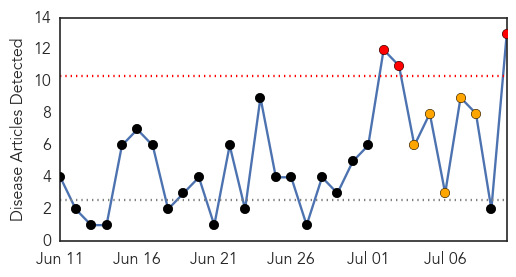
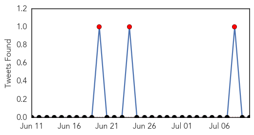
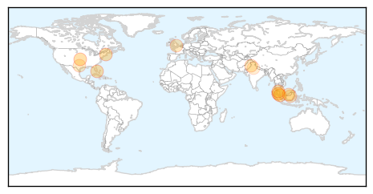

Dengue Fever
30-Day Web Trend
3 alerts, 5 warnings

30-Day Twitter Trend
3 alerts, 0 warnings

Article Locations
Article Confidences
Top Articles:
- 0.976
- First dengue vaccine 'shows promise'
- 0.975
- Dengue beckons, but admin in slumber
- 0.971
- Dengue Fever Vaccine Shows Some Promise in Trial
- 0.959
- Dengue shot offers some protection
- 0.952
- Dengue cases in Malaysia have reached endemic level, says Health Ministry
- 0.837
- Dengue vaccine trial shows promise - Nation
- 0.790
- Dengue directives
- 0.768
- Trial: dengue shot offers some protection
- 0.765
- ‘Miracle’ Dengue Vaccine Out Soon
- 0.743
- Sarawak longhouse chiefs urged to join in anti-dengue fight – BorneoPost Online
- 0.695
- State News
- 0.692
- Illegal immigrants bringing epidemic
- 0.540
- NDMC challans AIIMS for not taking dengue preventive measures
Top Tweets:
-
No tweets found for Jul 10, 2014
Yellow Fever
30-Day Web Trend
3 alerts, 0 warnings

30-Day Twitter Trend
0 alerts, 0 warnings

Article Locations

Article Confidences

Top Articles:
-
No articles found for Jul 10, 2014
Top Tweets:
-
No tweets found for Jul 10, 2014